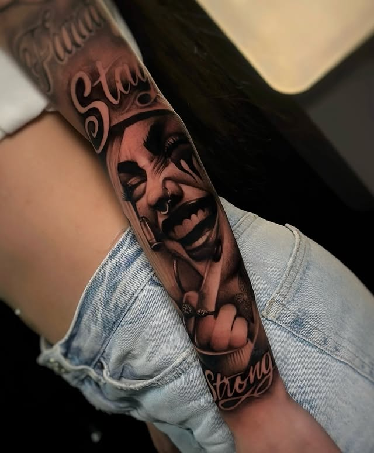
Black & Grey Realism
Chicano · Storytelling
• EL TRABAJO •
Cada proyecto es una conversación.
Iconografía religiosa, chicano clásico,
cultura asiática y pop bajo una sola
gramática: monocromático con peso.
• PIEZA SIGNATURE · NUEVO •
• PORTFOLIO •
Cuatro técnicas. Una sola gramática.
Próximamente · piezas en proceso de catalogación.
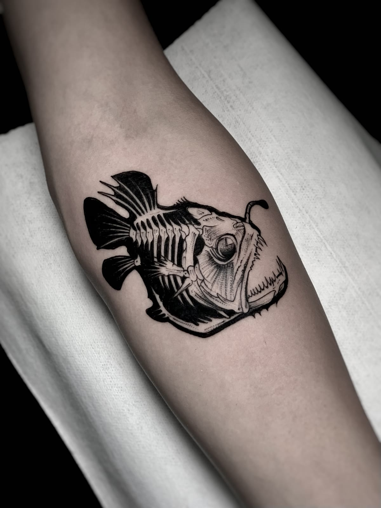
Historia pendiente · se llena en sesión con Felipe.
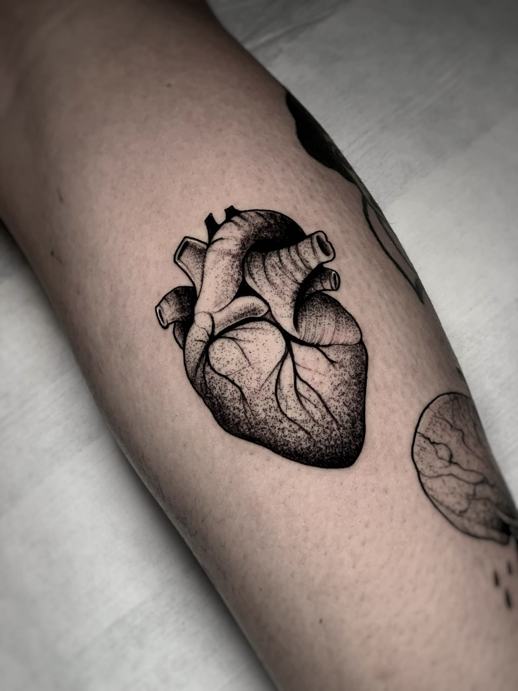
Historia pendiente · se llena en sesión con Felipe.
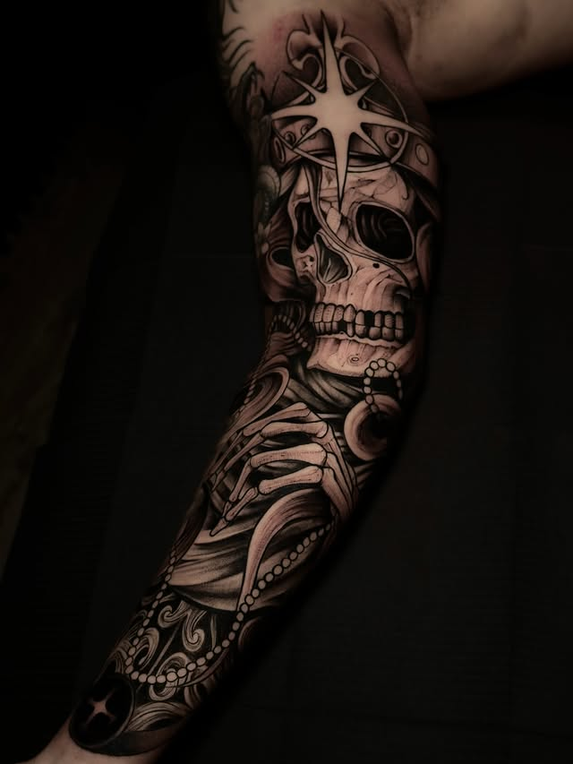
Sleeve completo blackwork · compás + rosary · cliente Sebastian.
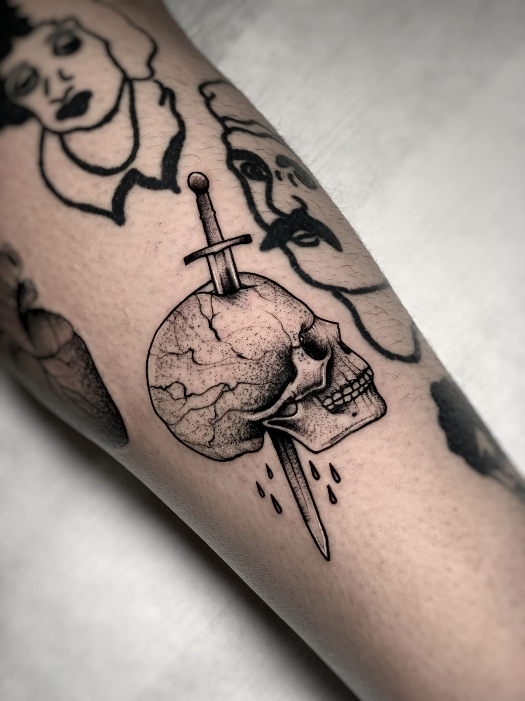
Historia pendiente · se llena en sesión con Felipe.
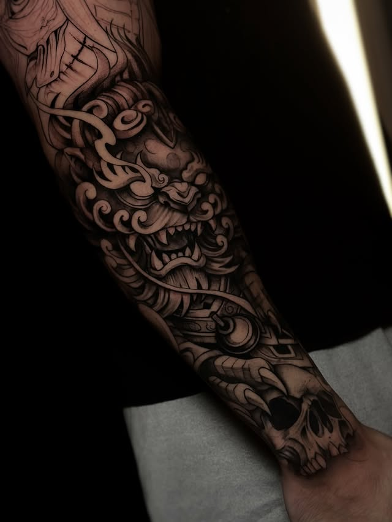
Brazo conceptual · cultura china · protección y buena fortuna.
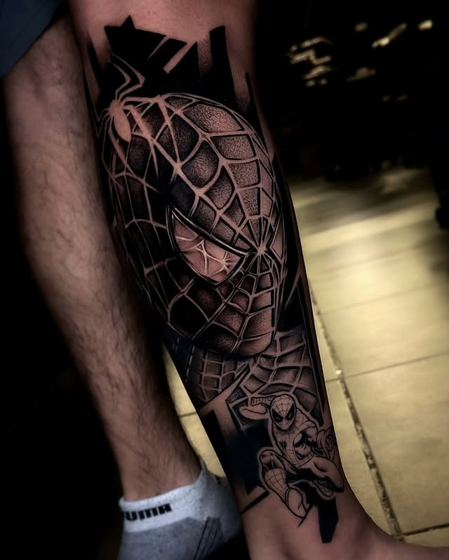
Pop culture · realismo 3D pantorrilla · interpretación de su idea.
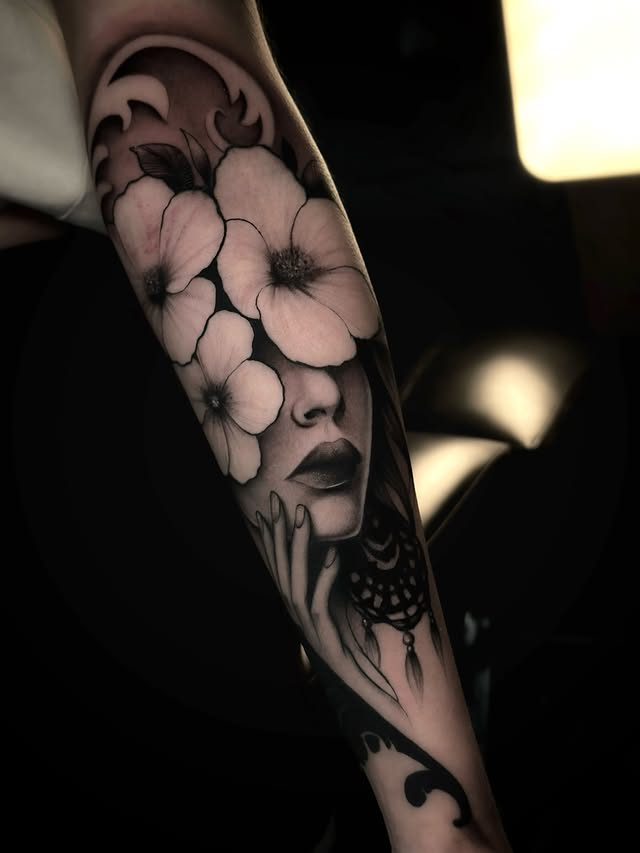
Realismo retrato · más del 50% cicatrizado.
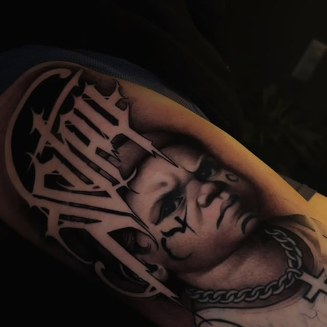
Historia pendiente · se llena en sesión con Felipe.
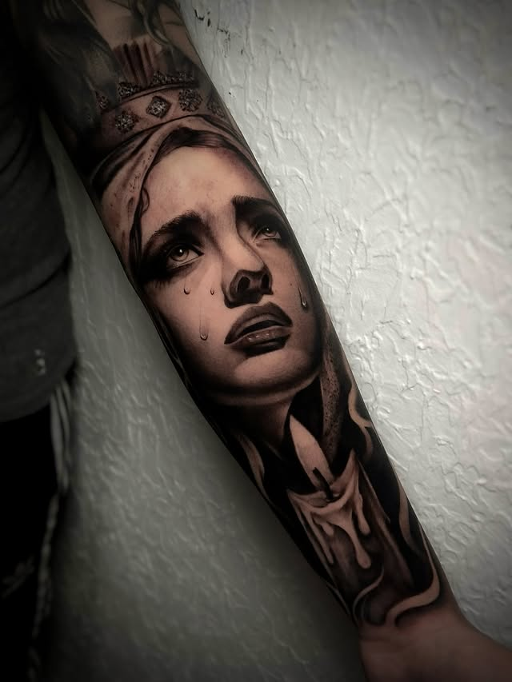
Sleeve forearm · realizado en España · iconografía mariana.
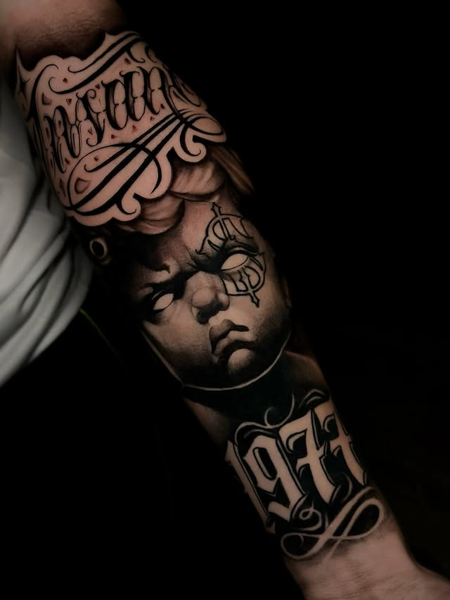
Sleeve chicano completo · lettering custom · cliente Frank.
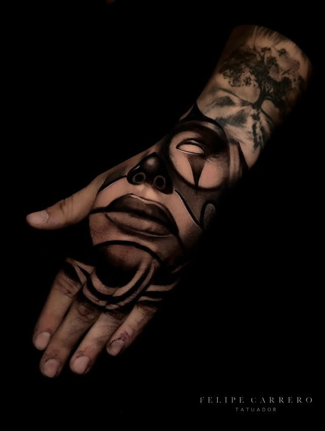
Chicano clásico · realismo retrato femenino.
Retrato chicano femenino · tinta Vicecolors · Cheyenne.
Historia pendiente · se llena en sesión con Felipe.
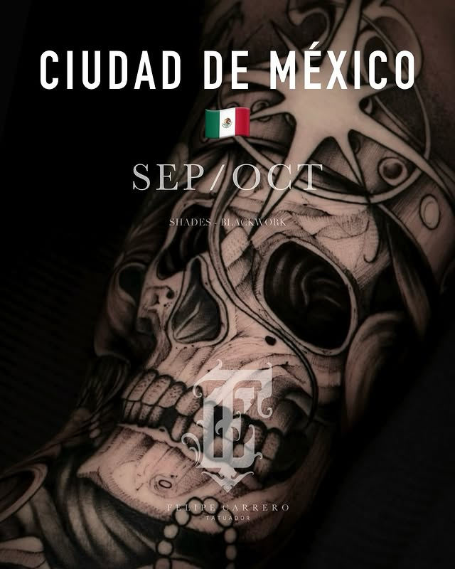
Historia pendiente · se llena en sesión con Felipe.
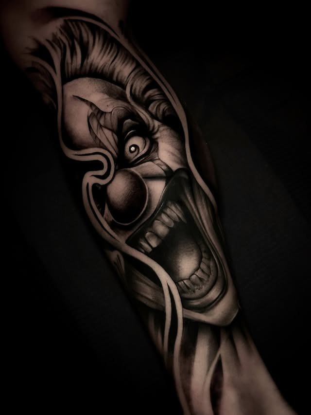
Historia pendiente · se llena en sesión con Felipe.
• GIRAS •
Cupos limitados · DM para reservar
Estudio privado · base
Permanente
Gira documentada · cupos limitados
SEP – OCT
Proyectos documentados
Histórico · próxima TBD
Proyectos documentados
Histórico · próxima TBD
• AGENDA •
Cotización y reserva por WhatsApp.
Yo interpreto tu idea.